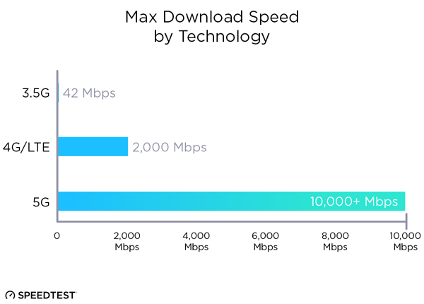
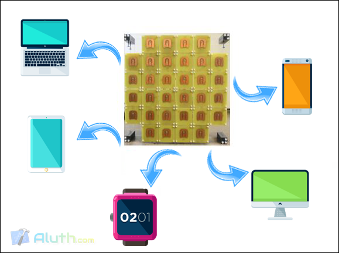
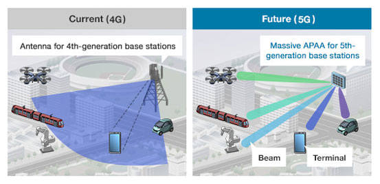

5G නුදුරේදීම අපි හමුවට එනවා කියලා ගොඩාක් දෙනෙක් මේ වෙද්දීත් දැණුවත් ඇති. නමුත් 5G කියන්නේ මොකද්ද කියලා, එහෙමත් නැත්නම් 5G වල වැදගත්කම මොකද්ද කියලා ඇහුවොත් ගොඩාක් දෙනෙක්ට හරි උත්තරයක් නැති වේවි. Broadband connections වල මීළඟ යුගය විදියට හැඳින්වෙන මේ තාක්ෂණය, 4G LTE වලට වඩා 40 ගුණයකටත් වඩා වැඩි වේගයකින් යුතු internet සම්බන්ධතාවයක් පාරිභෝගිකයින්ට ලබා දීමට තරම් ප්රබල බව තමයි වාර්තා වෙන්නේ. එය එසේ වීමට හේතුව විදියට දක්වන්නේ වර්ණාවලියේ විවිධ කලාපයන්ට අයත් තරංග (variety of spectrum bands) භාවිතයට ගැනීමයි. විශාල දත්ත ප්රමාණයක් කෙටි දුරක් ඇතුළත ගෙන යා හැකි රේඩියෝ තරංගත් (mmWave Radio Spectrum) මීට ඇතුළත්. නමුත් මෙලෙස ඉහළ සංඛ්යාතයෙන් යුත් තරංගයන් භාවිතා කිරීමේ එක් ගැටළුවක් ලෙස දේශගුණික තත්වයන් සහ උස් ගොඩනැගිලි ආදිය නිසා වඩාත් පහසුවෙන් බාධාවට ලක් විය හැකි වීම දක්වන්න පුලුවන්.

ඊට අමතරව මේ 5G භාවිතා කරන වැදගත්ම තාක්ෂණයන් කීපයක් ලෙස Small cells, massive MIMO, Beam-forming, සහ Beam-tracking හඳුන්වලා දෙන්න පුලුවන්.
🔵 Small cells : අඩු විදුලි ධාරිතාවයකින් ක්රියා කරන portable base stations. Small cells කිපයක් එකතු කර නිර්මාණය කරගන්න උපාංග විවිධ නගරවල පිහිටුවීමෙන් මේ තාක්ෂණය පාරිභෝගිකයින් හට ලබා දිය හැකි බව තමයි ඒ ගැන කරුණු හොයද්දි පැහැදිලි වුණේ.
🔵 Massive MIMO (Massive Multiple Input Multiple Output) : මෙමගින් එකවර උපාංග විශාල ගණනක් සමගින් සන්නිවේදනය කිරීමේ හැකියාව ලැබෙනවා. දැනට වාර්තා වෙන විදියට, මේ 5G antenna එකකට පුලුවන් එකවර උපාංග ලක්ෂයක් පමණ මෙහයවන්න. 4G antenna එකකට පුලුවන් වෙන්නේ, එකවර උපාංග 100 – 200 වගේ මෙහයවන්න විතරයි.

🔵 Beam-tracking : මෙහිදී 5G ලබාගෙන තියෙන කිසියම් උපාංගයක්, යම් ස්ථානයක සිට වෙනත් ස්ථානයකට ගමන් කරනවානම්, ඒ උපාංගය track කර ගෙන signal ලබාදිමේ හැකියාවත් තියෙනවා.
🔵 Beam-forming : මෙයින් සිදුවෙන්නේ යම්කිසි ප්රදේශයක 5G භාවිතා කරන පිරිස් වැඩිපුර ඉන්නව නම්, ඒ ප්රදේශයට වැඩි වශයෙන් 5G signal යොමු කිරීම. මේ නිසා අන්තාර්ජාල සේවා භාවිතා කරන පිරිස් වැඩි වුනත්, අපට ඉතා හොද වේගයක් ලබා ගන්න පුලුවන්. සියලුම ප්රදේශ වල අන්තර්ජාල සේවා භාවිතා කරන පිරිස් ආසන්න වශයෙන් සමානව විහිදිලා ඉන්නවානම්, ඒ සියලුම ප්රදේශ වලට සමානව signal බෙදා හැරීමක් සිදු කරනු ලබන බවයි පැවසෙන්නේ.

5G තාක්ෂණය මීළඟ වසර වන විට ඉතාමත් ඉහළ download speeds සහ ඉතාමත් අඩු ප්රමාද දෝෂයන් (low latency) සමගින් විවිධ ආයතන සහ සේවා දායකයින්ගෙන් අප අතරට පැමිණේවි. මේ වන විටත් Samsung, Verizon, Ericsson වගේ ලොව ඉහළ පෙළේ ආයතන 5G තාක්ෂණයට සුදුසු වන ආකාරයේ signal processing, chips, සහ antenna technologies පිලිබඳ පර්යේෂණයන් පවත්වනවා. කෙසේ නමුත් 5G තාක්ෂණය භාවිතයට පැමිණි විගස අපිට 4G සහ 4G LTE තාක්ෂණයන්ගෙන් මිදීමට අවස්ථාව ලැබෙන එකක් නැහැ. මොකද දැනට භාවිතයේ පවතින devices 5G තාක්ෂණයට අනුරූප වන ආකාරයට නෙවෙයි ගොඩනගලා තියෙන්නේ. නමුත් කාලයත් සමගින් 5G තාක්ෂණය පමණක් රජයන කාලයකුත් උදා වේවි.
Interactive TV, HD සහ 3D video, social gaming, virtual reality සහ augmented reality වගේ concepts සඳහාත් 5G අතිවිශාල ලෙස බලපෑම් එල්ල කරයි කියලා තමයි ගොඩක් දෙනෙක් විශ්වාස කරන්නේ. මේ දිනවල ලෝකයේ විවිධ ප්රදේශ වල ඉතාමත් සාර්ථක අන්දමින් 5G තාක්ෂණය test කරනු ලබනවා. මෑතකදී dialog ආයතනය මගිනුත් කොළඹ කේන්ද්ර කරගනිමින් මෙය අත්හදා බැලුවා. කෙසේනමුත් 5G තාක්ෂණය ප්රචලිත වුණු කාලයක සුපිරි අන්තර්ජාල අත්දැකීමක් ලබා ගැනීමට අපි සියලු දෙනාටම හැකියාව ලැබේවි.